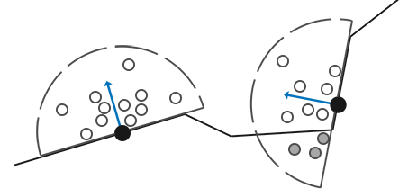
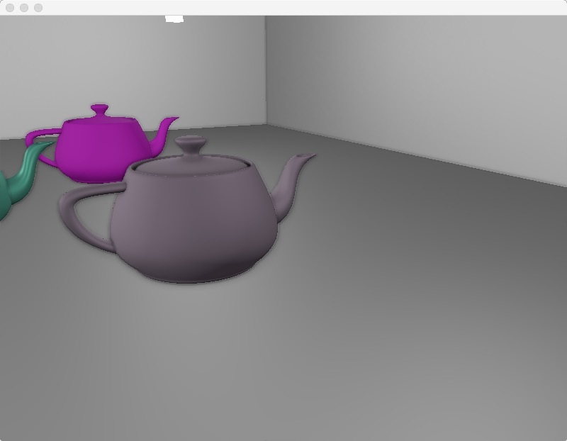
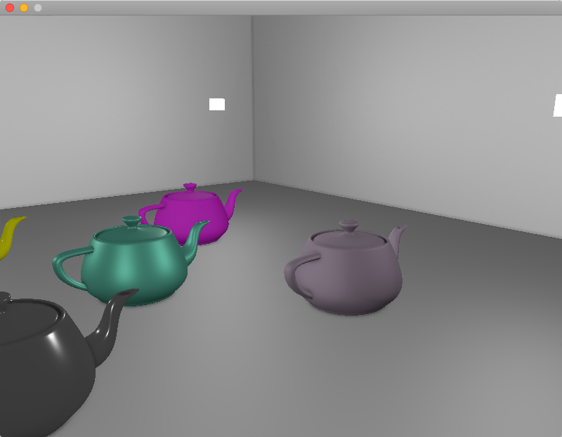

AO，ambient occlusion
环境光遮蔽，大致上指的是几何物体的拐角处，因为受光不全面（被相邻的面挡光／遮蔽），导致变暗。
SSAO，screen-space ambient occlusion
屏幕空间环境光遮蔽，简称SSAO，是一种让画面更‘真实’的后处理技术。该方法较为简单实用，但需要先获得view space的场景的几何信息，因此比较适合在defer rendering框架下应用。除了SSAO之外，还存在voxel based 的world space的AO技术。
SSAO的基本原理
实时渲染下做AO，基本做法都是计算出一张全屏的AO单通道(float)纹理，有了该纹理后，在做lighting pass时就可以逐像素采样该AO纹理，得到一个遮蔽率 （occlusion factor），对fragment的颜色值乘以该遮蔽率（遮蔽率越接近0，颜色更黑，遮蔽率越接近1，颜色则贴近原来的色），就完成了AO操作。
为了得到该AO纹理，需要先做G-Buffer pass，具体细节在此不表。
有了G-Buffer后，剩下问题就是如何用G-Buffer算出准确的遮蔽率纹理。
遮蔽率的计算方法：球采样／半球采样
遮蔽率算的就是一个0.0到1.0的值。SSAO方案下，计算这个值，无非就是对逐个fragment的周围的n个采样点做遮蔽测试，然后统计有百分之多少的采样点通过了测试，那么就得到了粗略的遮蔽率。
以下两张图可以形象地说明这个过程：


第一张是球型采样。从图中可以很清楚看出这个球采样的不足：即使一个平面没有被周围的平面遮蔽，该平面的遮蔽率也只是0.5。这样就会导致画面变灰。
第二张是半球采样，即限制采样点都在平面法向量同一侧。从图中可以看出这个方案更好。
采样点的生成算法
然后就是采样点的生成问题。采样点需要在tangent space下计算，即默认normal向量指向z轴正方向。所以每一个采样点只需要随机在x、y轴上做一点偏移即可：
static void generateSampleKernel(std::vector<Vector3dF>& ssaoKernel) {
for (unsigned int i = 0; i < 64; ++i)
{
// 随机分布采样点，x、y在[-1.0, 1.0]随机，而z在[0.0, 1.0]范围随机
// 确保采样点落在normal向量同一侧，即z必须大于0
Vector3dF sample(
random0_1<float>() * 2.0 - 1.0,
random0_1<float>() * 2.0 - 1.0,
random0_1<float>());
sample = sample.Normalize();
sample *= random0_1<float>(); // 单位化后随机分配距离
float scale = float(i) / 64.0; // 缩放因子，初始化为i/64是为了确保每一个点不会位置重复
scale = lerp(0.1f, 1.0f, scale * scale); // 使得大部分采样点会更靠近原点
sample *= scale; // 应用缩放因子
ssaoKernel.push_back(sample);
}
}
得到的采样点分布大致如下：

采样次数越多，遮蔽率就算得越准确，但性能也就下降。为了降低采样次数，为此要引入一个random noise随机化的旋转噪声贴图，使得相邻的fragment采样点差异性变大。
采样点的随机噪声和TBN矩阵
// 获取随机旋转向量并单位化
vec3 randomVec = normalize(texture(texNoise, TexCoord * noiseScale).xyz);
// 计算TBN，用TBN左乘samplePos就可以把samplePos从tangent space转换到view space
vec3 tangent = normalize(randomVec - normal * dot(randomVec, normal)); // TBN的x方向
vec3 bitangent = normalize(cross(normal, tangent)); // TBN的y方向
mat3 TBN = mat3(tangent, bitangent, normal); // TBN的z方向
计算TBN矩阵最为精妙的就是第一步：tangent向量的计算。因为最终要构造出的TBN的z方向是normal的方向，所以未知数就是相应的x、y方向，而因为正交矩阵的一个基可以用另外2个基做叉乘得到，所以未知的y方向（bitangent）等于normal和tangent的cross。真正要算的只有x的方向：tangent向量。
tangent向量，必然和normal正交，但方向和randomVec有关（所以randomVec才被称为旋转向量）。
首先，randomVec和normal的角度关系需要先计算出来，方法就是做点积：
- dot(randomVec, normal) = cosθ
cosθ就是一个投影系数，用cosθ去乘以randomVec就得到normal在randomVec上的投影（方向相同，长度不等），同理，用cosθ去乘以normal就得到randomVec在normal上的投影。
再看一下上面的代码：
vec3 tangent = normalize(randomVec - normal * dot(randomVec, normal)); // TBN的x方向
可以看出normal * dot(randomVec, normal) 就是指randomVec在normal上的投影，有了这个投影点r向量后，就可以用randomVec - r，得到垂直于normal的tangent向量。记得需要再单位化。
最终的遮蔽率计算
float radius = 0.5; // 可以调整的参数，控制采样半径范围
float occlusion = 0.0;
for(int i = 0; i < kernelSize; ++i)
{
// 把采样点从tangent space转到view space
vec3 samplePos = TBN * samples[i];
// 做偏移，得到真正的采样坐标(view space)
samplePos = fragPos + samplePos * radius;
// 从view space转到screen space
vec4 offset = vec4(samplePos, 1.0);
offset = proj * offset;
// perspective divide，得到NDC坐标（normalized device coordinates）
offset.xyz /= offset.w;
// 映射NDC到[0.0, 1.0]，从而可以采样GBuffer的纹理
offset.xyz = offset.xyz * 0.5 + 0.5;
// 获得GBuffer中该位置的深度值
float sampleDepth = sampleGBufferPos(offset.xy).z;// view space
// 深度比较 bias是调整值 bias太小就会出现acne现象 建议0.025
float _occlusion = sampleDepth >= samplePos.z + bias ? 1.0 : 0.0;
float rangeCheck = smoothstep(0.0, 1.0, radius / abs(fragPos.z - sampleDepth));
occlusion += _occlusion * rangeCheck;
}
FragColor = 1.0 - (occlusion / kernelSize); // occlusion越接近kernelSize，FragColor即遮蔽率就越低
其中的rangeCheck步骤是比较特殊的处理，它解决的是这么个情况：对于一个物体的轮廓处的fragment，在做采样计算时会把后面的远处的fragment也拉进来测试。所以要计算fragPos.z - sampleDepth，求出当前fragment的深度以及被采样点的深度的距离，距离过大就说明不是近邻的会遮蔽自己的fragment。距离越大，rangeCheck就会越接近0，从而_occlusion值也会削弱。（注意fragPos.z - sampleDepth小于等于radius）
去掉rangeCheck后的现象如下，可以看到茶壶边缘出现了ao黑边，是不对的：

最终效果图
ssao纹理图（未做模糊处理）：

ssao纹理图（做了模糊处理）：

ssao + shading：

工程上遇到的坑
因为我做的是基于defer框架的ssao，所以一部分坑来自于defer。
G-Buffer输出的position和normal需要位于什么空间？
G-Buffer的vertex shader需要对传入的postion和normal信息做矩阵变换操作并输出到frame buffer里。
这个矩阵变换有些坑，需要仔细思考下。首先，它必须要有object space到world space的变换，也就是model变换，这是每个object自有的。
到里world space后，是否需要到view space呢？即是否要再乘以view matrix。答案因应用情况而异。
如果是在G-Buffer就做了view变换：那么到了ssao pass，因为ssao本来就是view space下的计算，所以是ok的，但是对于deferred lighting pass，就不太友好，因为光照计算要在world space下算，position和normal都需要乘以view matrix的逆矩阵（可以在cpu先算好），从而恢复到world space。
如果不在G-Buffer做view变换：G-Buffer输出的就是干净的world space信息。ssao pass就需要自己做view变换，而deferred lighting pass则不用。
我自己是采用里第一种做法。
G-Buffer的position和normal具体怎么做变换？
// position的变换
vec4 WorldPos = model * vec4(position, 1.0f);
FragPos = (view * WorldPos).xyz; // 输出
gl_Position = proj * view * WorldPos;
// normal的变换
// mat3 normalMatrix = mat3(view * transpose(inverse(model))); // Wrong!
// mat3 normalMatrix = mat3(transpose(inverse(view * mat4(mat3(model))))); // not good
mat4 normalMatrix = view * mat4(transpose(inverse(mat3(model))));
Normal = mat3(normalMatrix) * normal; // 输出
position的变换一目了然，没什么坑。但是normal的坑就大了。
首先，为了防止model矩阵的平移属性影响到normal，需要把mat4的model直接裁剪成mat3，从而去掉平移属性。
然后，需要计算normal matrix。公式推导另外成文。只需要记得公式是transpose(inverse(mat3(model)))即可。
最后再把mat3的normal matirx转成mat4，从而可以和mat4的view相乘，从而得到G-Buffer真正需要的normal matirx。
G-Buffer的position纹理需要设置GL_CLAMP_TO_EDGE
glTexParameteri(GL_TEXTURE_2D, GL_TEXTURE_WRAP_S, GL_CLAMP_TO_EDGE);
glTexParameteri(GL_TEXTURE_2D, GL_TEXTURE_WRAP_T, GL_CLAMP_TO_EDGE);
这样就能限制G-Buffer之后的pass采样position纹理时，position的范围不会超出[0.0, 1.0]。
博主将十分感谢对本文章的任意金额的打赏^_^